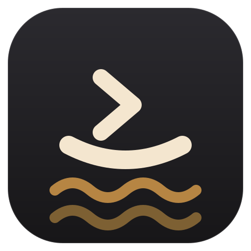
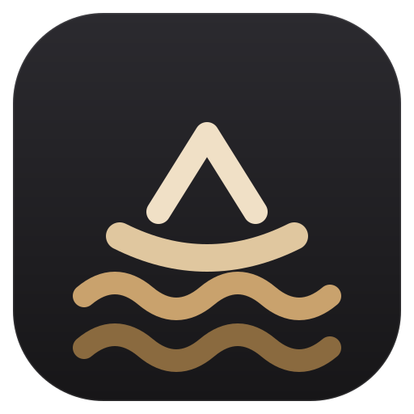
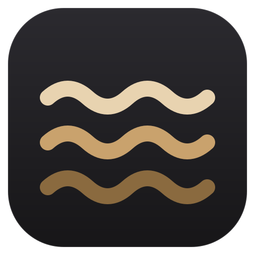
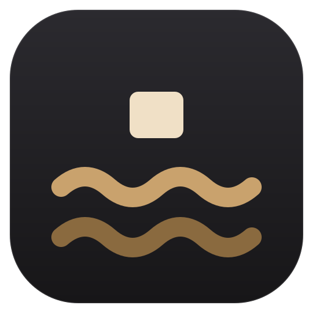
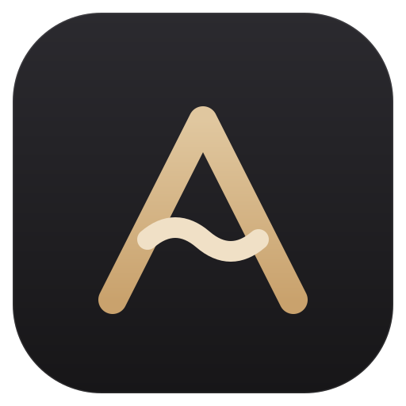
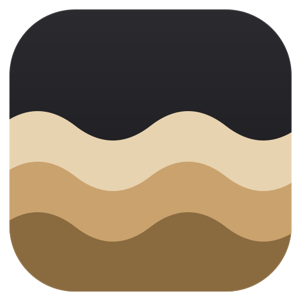

아이콘 후보 · 3차
프롬프트가 배가 됩니다.
준영님 안 그대로 그렸습니다 — _ 를 굽혀 선체로, > 를 그 위에
얹어 뱃머리로. 프롬프트 >_ 를 그대로 쓰면서 바다 위의 배가 됩니다.
맨 위 둘이 그 안이고, 아래는 앞서 보신 바다 넷과 1차 후보입니다.

S5. 프롬프트 배
준영님 안
선체는 밑줄이 굽은 것이고 뱃머리는 프롬프트 꺾쇠입니다. 오른쪽을 향해
나아가는 배로 읽힙니다. 처음 그렸을 때는 물결이 선체만큼 굵어 작은 크기에서 배가 바다에
묻혔습니다 — 배는 굵고 밝게, 바다는 가늘고 어둡게 벌려 놓았습니다.
직선 _ 로 두면 밑줄로만 읽히고 배가 되지 않아 곡선으로 굽혔습니다.

S6. 돛 배
S5 의 변형같은 배인데 꺾쇠를 세워 돛으로 삼았습니다. 배로는 더 또렷하지만 프롬프트라는 성격은 옅어집니다. 둘을 나란히 두고 고르시라고 함께 올립니다.
2차 — 바다 넷 (참고)

S1. 세 겹 물결
바다 그대로위에서 아래로 밝기가 떨어져 깊이가 생깁니다. 선 세 개뿐이라 아주 작아져도 형태가 남습니다. 넷 중 가장 읽기 쉬운 대신, 물결 아이콘은 다른 앱에서도 흔한 모양입니다.

S2. 수평선 위의 커서
바다 + 터미널아래 두 물결이 바다, 위의 블록이 터미널 커서입니다. 이름의 뜻과 제품의 성격을 둘 다 말하는 유일한 안입니다. 해가 뜬 수평선으로도 읽힙니다.

S3. 파도가 된 A
이름 + 뜻A 의 가로획이 파도입니다. A.R.A 라는 이름과 '바다'라는 뜻이 한 글자 안에서 만납니다. 넷 중 가장 우리 것인 형태 — 다른 앱에서 볼 일이 없습니다.

S4. 수심
면으로 채운 바다선이 아니라 면으로 채운 세 층입니다. 그래서 16px 에서 가장 또렷합니다. 다만 앰버로 가득 채우니 바다보다 모래언덕처럼 읽히는 면이 있습니다 — 이 안을 고르시면 보조색(세이지)이나 더 어두운 청록으로 바꿔 다시 그리겠습니다.
1차 후보 (참고)
준영님이 뜻을 골라 주신 B 는 위의 바다 넷으로 대체했습니다. 나머지는 비교용으로 남겨 둡니다.
A. 프롬프트 A
이니셜 + 터미널A 의 가로획을 커서 블록으로 바꿨습니다. 이름 첫 글자와 "터미널"이 한 글자 안에서 만납니다. 넷 중 가장 앱 아이콘답고 16px 에서도 삼각 골격이 남습니다.
B. 파문
이름의 뜻아라는 바다를 뜻하는 우리말입니다. 세 겹의 물결은 A.R.A 세 글자이자 원격까지 닿는 신호입니다. 넷 중 가장 단순해서 아주 작을 때 제일 잘 버팁니다. 대신 "터미널"이라는 성격은 그림만으로 읽히지 않습니다.
C. 이어진 노드
AI Remote Agent내 PC · 원격 · 에이전트 셋이 한 삼각형으로 묶이고, 그 삼각형이 A 를 이룹니다. 위 꼭짓점(에이전트)만 밝습니다. 지금 거미가 갖고 있던 "연결된 점" 아이디어를 거미 없이 이어받은 안입니다.
D. 한 창
제품이 하는 일왼쪽 좁은 칸(파일 트리)과 오른쪽 프롬프트. "한 창에 다 있다"는 제품의 성격을 이니셜 없이 그림 하나로 말합니다. 넷 중 가장 설명적이지만, 선이 많아 16px 에서는 디테일이 뭉갭니다.